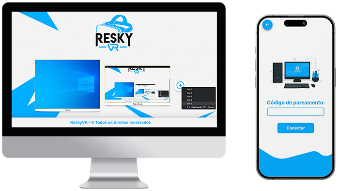

Proposta
Acessar um ambiente de trabalho em realidade virtual por meio de seu dispositivo!
Veja além do imposível!
Conheça agora!Previsão para o lançamento oficial da ReskyVR!
Dias
Horas
Minutos
Segundos
A ReskyVR é um aplicativo que utiliza a realidade virtual para aumentear sua produtividade.
Acessar um ambiente de trabalho em realidade virtual por meio de seu dispositivo!

Uma experiência em realidade virtual acessível por meio do seu dispositivo!

Tenha total liberdade para customizar seu ambiente de trabalho!
O ReskyVR é um aplicativo móvel e desktop que oferece aos usuários a possibilidade de acessar um ambiente de trabalho em realidade virtual por meio de seus dispositivos. O principal objetivo do aplicativo é proporcionar aos usuários um espaço de trabalho virtual confortável e focado na produtividade, com recursos que visam melhorar a eficácia de suas tarefas diárias.
Saiba MaisNosso aplicativo é desktop e mobile.
Algumas dúvidas frequentes sobre a ReskyVR.
ReskyVR é um aplicativo móvel e desktop que oferece aos usuários a possibilidade de acessar um ambiente de trabalho em realidade virtual por meio de seus dispositivos. O principal objetivo do aplicativo é proporcionar aos usuários um espaço de trabalho virtual confortável e focado na produtividade, com recursos que visam melhorar a eficácia de suas tarefas diárias.
Uma das principais funcionalidades do ReskyVR é o espelhamento da tela do computador em múltiplos monitores virtuais. Isso permite que os usuários tenham a sensação de utilizar várias telas ao mesmo tempo, o que facilita a realização de multitarefas e melhora a eficiência no trabalho. Com esse recurso, os usuários podem visualizar e interagir com diferentes aplicativos e projetos simultaneamente, sem a necessidade de alternar constantemente entre as janelas.
O aplicativo também oferece opções de personalização, permitindo que os usuários adaptem o ambiente de trabalho virtual de acordo com suas preferências individuais. É possível alterar a aparência visual, organizar os monitores virtuais de forma conveniente e selecionar temas ou ambientes para criar uma experiência de trabalho personalizada.